CMS / NPTS システム説明書
2018.08.27
小島昌彦
■ 目次
■ システムの概要
■ システムの使い方
■ システムの概要
● 動作環境
- 本システムはMicrospoft Azureサービスにより作成された仮想マシン上で稼働している。
- AzureサービスのサブスクリプションIDはbc04488e-d894-4b0d-92c0-8d90137874e8であり、
- サブスクリプション名は「IoT自動販売機スポンサードプラン」である。
- 本システムが稼働する仮想マシンは当該サブスクリプションにより作成された、以下のマシンである。
- コンピューター名： CMS
- オペレーティング システム： Linux (Ubuntu 18.04.1 LTS)
- サイズ： Standard D2s v3 (2 vcpu 数、8 GB メモリ)
- パブリック IP アドレス： 40.115.142.231
- 仮想ネットワーク/サブネット： CMS-vnet/default
- DNS 名： cms.japaneast.cloudapp.azure.com
- サーバー側言語： php 7.2.7
- クライアント側言語： JavaScript
- 利用システム： Google Calendar API, Google Maps API
● 機能概要
- 本システムは、遠隔地にある複数のGPS端末と通信し、そのアップロードデータを保管・管理するサーバシステムである。
- GPS端末としては、定点設置の動画中継カメラや車載GPS通信端末が想定されているが、特に制約はない。
- GPS端末からアップロードされるデータは、端末の位置や方向、標高や温湿度等の環境データであり、以降これらをメタデータと呼ぶ。
- それに加え、カメラ型の端末の場合は、撮影した動画データもアップロードされてくる。
- これらのデータを全て保管した上で、閲覧要求により全ての保管データが閲覧できるようになっている。
● 閲覧概要
- アップロードされたデータを効率よく閲覧するには、特定日時におけるアップロードデータの有無が一覧できる必要がある。
- これを実現するため、Google Calendar APIを利用している。
- アップロードデータの有無をカレンダー上の該当箇所に明記し、下記の地図サイトへのアクセスリンクも貼っておく。
- 各端末のアップロードデータは、Google Maps APIを利用してGoogle地図上に表示される。
- 複数端末のデータが地図上の該当する位置に同時に表示される。
- カメラ型の端末の場合は、対応する時刻に」録画された動画も再生される（音声付も可）。
● モジュール構成
- 本システムは（歴史的経緯により）以下の２つの部分に大別されている。
- 地図サーバー： 各端末からのメタデータを保管し、閲覧時の入口となるサーバー・モジュールで、
２つのサーバー・エントリと１つのプログラムで構成される。
- camerademo： 従来からある、カメラ型端末用のアップロード・閲覧用のサーバー・エントリ
- numberplate： 今回新設された、車載GPS型端末用のアップロード・閲覧用のサーバー・エントリ
（Apacheの設定にて、上記camerademoエントリのAliasになっている）
- make_plate 指定された情報に基づきナンバープレートの画像ファイルを作成するプログラム
- 録画サーバー： 各カメラ型端末からの動画データを保管し、閲覧用JavaScriptに動画を配信するサーバー・モジュール。
■ システムの使い方
■ データのアップロード
(将来記述される予定)
■ 閲覧操作
● Googleカレンダー
- 本システム内に保管されたデータを閲覧するには、まずGoogleカレンダーから入る。
- ただし、現状、本システムのGoogleカレンダーは一般公開されていないので、共有の登録処理が必要となる。
- 共有登録後、Googleカレンダーを開くと、カレンダー中にCMSのエントリが表示される。
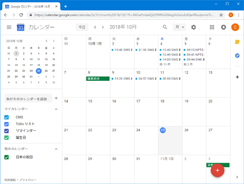
- スケジュール表示を選ぶと、エントリの全体が分かりやすく表示される。
CMS 録画記録とNPTS 追跡記録というエントリが本システムのものである。
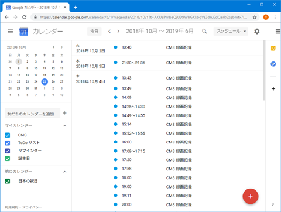
- ここで、エントリのどれかをクリックすると、以下のようなポップアップが出現する。

- ポップアップ中の地図を表示リンクをクリックすると、外部サイト誘導の警告が出るので、リンク先をクリックする。
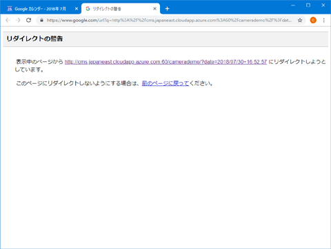
- 当該日時のGoogleマップが表示される。
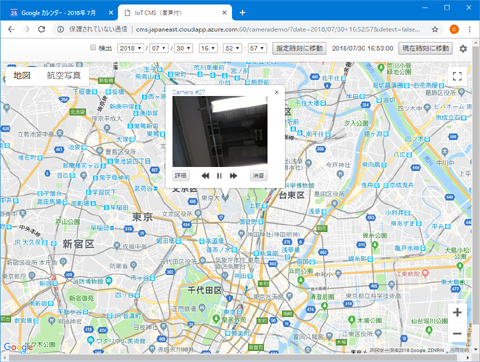
● Googleマップ
- Googleマップ中では、各端末は地図上の該当する位置に吹き出しとして表示される。
以下はカメラ型端末の場合。
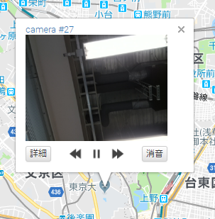
- カメラ型の場合、吹き出し中の詳細ボタンを押すと、その時点のメタデータが表示される。
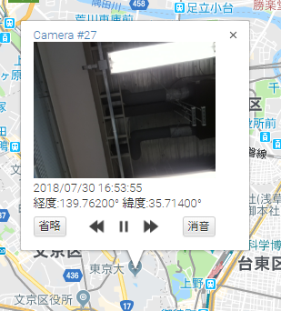
- 同じく、吹き出しに表示された車載GPS端末の場合。
このケースでは、赤い線で移動した軌跡が表示されている。

- この端末では、吹き出し中の画像そのものを押すと、その時点のメタデータが表示される。
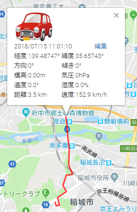
- 車載GPS端末の場合は、吹き出しに任意の画像を表示できる。
以下はナンバープレート画像を選択したケース。
詳細はカメラ・端末の設定を参照。
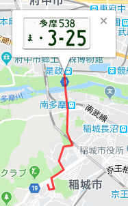
● 表示・再生の制御
- 地図は任意の時点でのデータ再現（録画再生を含む）が可能になっている。
- 地図の上にある、時間移動バーで指定すればよい。
- ただし、この時間移動バー中の「現在の時刻に移動」は、実際の現在時刻より２分前の状態までしか復元できない。
- また、地図中にカメラ型端末が表示されている場合は、吹き出しで録画動画の再生制御が行える。
吹き出し中の << || >> の各ボタンで巻き戻し・一時停止・早送りが可能である。
- [消音]ボタンを押すと、再生音がミュートされる。
- さらに、カメラ型端末では、再生中の動画領域をクリックすると、録画再生専用のウィンドウが別途生成される。
- ここでの再生制御も、吹き出しと同様の操作が可能である。
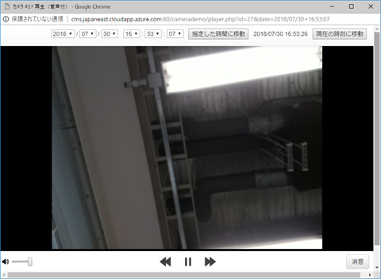
● カメラ・端末の設定
- 地図画面の右上の歯車ボタンを押すと、カメラ・端末の設定画面が別ウィンドウに表示される。
- サーバー・エントリがcamerademoの場合は、以下のような画面が表示され、新たなカメラの追加や既存カメラの録画サーバーの変更ができる。
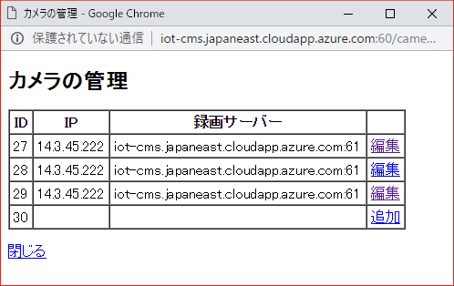
- サーバー・エントリがnumberplateの場合は、以下のような画面が表示され、新たなGPS端末の追加や既存端末の画像や軌跡の変更ができる。
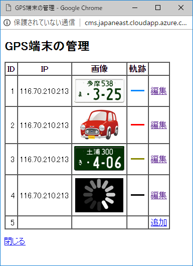
- 以下が、numberplateの場合の端末編集画面である。
- 録画機能をもった端末（カメラと同等）の場合、
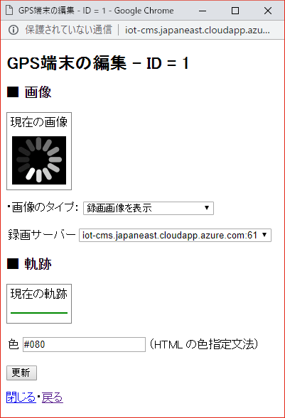
- ナンバープレート画像を作成する場合、
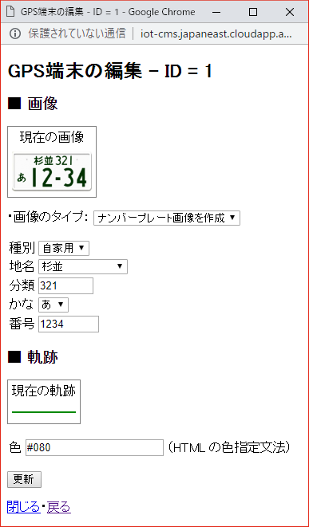
- 特定の画像をアップロードする場合、
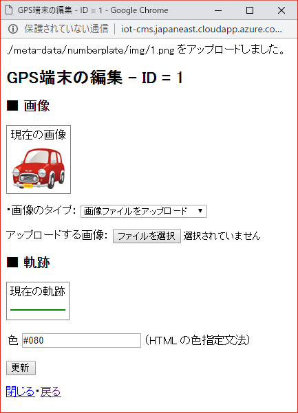
2018.08.27
小島昌彦